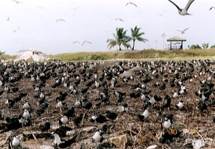

Flash ! DX
Reportの読み方
【 Back Issues Jul.2000】
TIME:UTC(JST-09:00)
31.Jul.2000(15:00e)
*BY-TV 00:00- 49.750 --
*VK-TV 06:00- 46.172 --
*9M-TV 08:00- 48.240/260 --
VK4CXQ 08:36 50.110/120 SSB
VK4BRG 08:37 50.077 CW Beacon
VK6RSX 08:37 50.304 CW Beacon
VK8RAS 08:40 50.047 CW Beacon
VK4ABP 08:40 52.346 CW Beacon
VK4JSR 08:45 50.110/130 SSB
VK4APN 09:28 50.110 SSB/CW
VK4WDN 09:58 50.110 SSB
VK6JQ 10:02 50.110 CW
P29KFS 10:15 50.110 SSB
P29BPL 10:15 50.029 CW Beacon
|
◎ 日中は沖縄のビーコンが強力。夕方から久しぶりにアフタヌーン・タイプのTEPでVK4'sが強力に入感してきた。
09:30z頃にイブニング・タイプのTEPに変わり、VK6、P29が強力に入感。
|
30.Jul.2000(15:00c)
*BY-TV 00:00- 49.750 --
*VK-TV 07:00- 46.172 --
P29BPL 11:45 50.029 CW Beacon
29.Jul.2000(15:00b)
*BY-TV 00:00- 49.750 --
|
◎ 昨日は午後から聞こえていたVK-TVも、今日は入感なく、静かな週末の6m。
|
28.Jul.2000(15:00c)
*BY-TV 01:00- 49.750 --
*VK-TV 06:00- 46.172 --
*VK-TV 08:00- 46.240 --
◎ C21JH(Nauru)の援助(2)
VK2GJHによるC21JHのDXpediに対する支援の申し込みは、既に複数の局から頂いています。
まだ目標額には遠い額ですが、SIDXFでは今後も申し込みの受付け(連絡は下記の"コウノトリ"をクリックして下さい)を継続しています。
SIDXF経由の場合は、今のところ"支援額"の確認だけで、まだ送金の必要はありません。
目標額に達した時点で具体的な送金方法についてお知らせいたします。もちろんSIDXF経由ではなく、
直接VK2GJHに送って頂いても構いません。
サイクル23ではまだ6mのQRVが行われていないNauruからの運用を成功させるために、
JA各局のご協力をお願いします。
(SIDXF)
[連絡先]

|
27.Jul.2000(15:00c)
*BY-TV 00:00- 49.750 --
*VK-TV 12:00- 46.172 --
P29BPL 12:00 50.029 CW Beacon
4W6UN 12:00 50.097 CW Beacon
|
◎ 相変わらず日中のDXコンデションは上がらない。
夜間にVK、P29から、YC、9M2、6など東南アジア方向のDXが一時的に上昇するが、入感の時間は短い。
|
26.Jul.2000(15:00f)
*BY-TV 00:00- 49.750 --
*VK-TV 11:00- 46.172 --
P29BPL 11:20 50.029 CW Beacon
4W6UN 11:20 50.097 CW Beacon
VK4RIK 11:25 52.445 CW Beacon
YC1EHR 13:27 50.110 CW
YC1MH 13:48 50.160/110 SSB
9M6SU 14:10 50.110/115 SSB
25.Jul.2000(15:00c)
*BY-TV 00:00- 49.750 --
(K6FV/B 06:30- 50.096 CW JA2.4.5.9.0)
*VK-TV 09:00- 46.172 --
P29BPL 11:50 50.029 CW Beacon
VK4RIK 11:50 52.445 CW Beacon
VK8MS 11:58 50.110 SSB
◎ FH/TU5AX BhutanからQRV?
MayotteからアクティブにQRVしているFH/TU5AX・Christianは、8月20日にMayotteを離れる予定。
"Chris"は"Clipperton DX Club"が9月3日-13日に計画しているBhutan(A5)のDXpeditionに参加、
6mの運用を希望している。
|
24.Jul.2000(15:00e)
*BY-TV 23:00- 49.750 --
*VK-TV 09:00- 46.172 --
P29BPL 11:25 50.029 CW Beacon
VK4RIK 11:25 52.445 CW Beacon
VK6JQ 11:48 50.110 CW
4W6UN 11:48 50.097 CW Beacon
VK6RSX 11:50 50.304 CW Beacon
P29KFS 12:28 50.110 SSB
VK4FNQ 12:34 50.110 SSB
23.Jul.2000(15:00d)
*BY-TV 23:00- 49.750 --
BW2000 00:20 50.122 SSB
BG7OH 01:30 50.125 SSB
*9M-TV 02:00- 48.240/260 --
BW0VHF 05:30 50.115 SSB
DS3DJX 05:55 50.144 SSB
9M6SMC 14:10- 50.015 CW Beacon
9M2NK 14:20 50.107 CW
|
◎ 早朝からBV/BW(台湾)、BG(中国)など大陸方面のEsが強力。
午後にはBW0VHFが50MHzと平行して144.110MHzでも4時間以上に渡り入感していた。
|
22.Jul.2000(15:00e)
*VK-TV 23:00- 46.172/240 --
*BY-TV 23:00- 49.750 --
KH0/JE3EJC 23:40 50.115/117 SSB
BG7OH 00:59 50.130 SSB
JF8HIQ/JD1 01:06 50.252 SSB
VR2LC 01:15 50.154 CW
VR2IO 01:19 50.100 CW
BW0VHF 02:25 50.110 SSB
VR2XMT 03:49 50.130 SSB
HL5XF 03:52 50.120 SSB
BV2NT 06:30 50.110 SSB
KH0/JE3EJC 07:29 50.130 SSB
21.Jul.2000(15:00d)
*BY-TV 00:00- 49.750 --
*VK-TV 00:00- 46.172 --
KH0/JE3EJC 00:15 50.115/119 SSB
JF8HIQ/JD1 00:47 50.250 SSB
KH0/JE3EJC 01:40 50.130 SSB
*VK-TV 07:00- 46.172 --
VK4DO 08:40 50.110/115 SSB
BV3FQ 09:15 50.120 SSB
BV2NT 09:27 50.110 SSB
BX2AB 11:10 50.110 CW
P29BPL 12:50- 50.029 CW Beacon
VK4RIK 12:50- 52.445 CW Beacon
|
◎ 昨日同様、午前中は国内Esが強力、このEsの信号と共にKH0、JD1(南鳥島)など、
太平洋方面の2,000-2,500Km圏内が昼近くまでFBにオープンした。夕方からVK方面が上昇。
|
20.Jul.2000(15:00b)
*BY-TV 00:00- 49.750 --
◎ 3B9RのQSL
1999年4月に運用され6mでも多くの局(JAは658 QSO)がQSOに成功した3B9R(Rodriguez I)のDXpediのメンバーの一員として参加したJA3IG・葭谷(よしたに)さんから、
QSLの取り扱いについての情報が寄せられている。
3B9Rが運用されて既に一年以上も経過したにも関わらず、いまだにQSLが届いていない局が多く、JAからもQSLマネジャーに不満が寄せられた。
米国在住のQSLマネジャーからの連絡では、既にQSLは全て発行済みと発表され、びっくり。
この不満はメンバーの葭谷さんにも直接寄せられたため、
葭谷さんは最近マネジャーから未記入のQSLを取り寄せ、JA局からの再請求分の発行を始めている。
再請求をしなければならなかったJA局の中には葭谷さんに直接不満をぶつける局もいたとのことだが、
葭谷さんはDXpediのオペレーターの一員だっただけで「QSLマネジャー」ではないので、誤解しないでほしいと。
今回のQSLの発行はあくまでも"緊急"の処置。
次回の3B9とのQSOが何時になるのか予測もたたない貴重なエンティティーなので、
この3B9RのQSLは是非コンファームしておきたい。QSLを未受領の局は、至急JA3IG・葭谷さん宛にSASEで請求すること。
|
19.Jul.2000(15:00c)
*BY-TV 00:00- 49.750 --
*VK-TV 09:00- 46.172 --
YJ8WR 09:25 50.110 SSB
P29KFS 09:38 50.110 SSB
P29BPL 09:39- 50.029 CW Beacon
VK4BRG 09:40- 50.077 CW Beacon
VK4RIK 09:40- 52.445 CW Beacon
VK4FNQ 09:48 50.110/140 SSB
VK4APE 09:50 50.110/125 SSB
18.Jul.2000(15:00c)
*BY-TV 00:00- 49.750 --
KH6SX 07:22 50.110 CW
*VK-TV 08:00- 46.172 --
YJ8WR 10:15 50.110 SSB
◎ 9M6 & 9M0(E.Malaysia & Spratly=Layang Layang)
7月12、13日の東マレーシア(E.Malaysia)Sabah州から9M6JUを運用した後、15日に1998年2月に9M0Cを運用したスプラトリー(Spratly=Layang Layang)を2年ぶりに訪れた。
前回のDXpeditionの訪問では2週間の長期滞在だったが、今回の滞在は僅か25時間。
コタ・キナバル(Kota Kinabalu)からLayang Layang間を一日一往復している双発の飛行機は今年からロシアのエアロフロート社製のAH-38-100(ボストーク)に変わった。
この飛行機はスピードもあり、島まで一時間弱で飛行出来るようになったとチャーターしているリゾート・ホテル側では自慢している。
Layang Layangは2年前とほとんど変わっていなかったが、"島"の南端の拡張工事？が現在行われており、
大型の運搬船が2隻、リーフの内側に接岸していた。
この運搬船から岩石(砕石)を運ぶ2台のダンプカーが滑走路を走り回っていた。
島の南端に"営巣"している海鳥(カツオ鳥...etc)の群が、ダンプカーの荷下ろしの度に上空に舞い上がる。
毎年11月から1月は閉鎖されていたLayang Layangも昨年初めて"年中無休"となり、昨年11月に米国のグループが9M6OOをここから運用した。
しかし、今年は再び11月から年内一杯再び閉鎖される事が決まった。建物のメンテナンスを行うのが理由とか。
今回は手続きの関係でSpratlyからの運用は行わなかったが、年内の再訪問を予定している。
|

(左)島との間を往復しているAH-38-100(ボストーク)。Resort HotelのKK事務所の係員と
(右)Spratlyの"住人"海鳥の群は島の南端に移動していた
17.Jul.2000(15:00e)
*VK-TV 07:00- 46.172 --
VR2ZNC 08:57 50.110 SSB
BV2NT 08:58 50.110/115 SSB
VK6RSX 09:00- 50.304 CW Beacon
YJ8WR 09:22 50.110 CW
VR2KW 09:29 50.110 CW
BW0VHF 09:35 50.110/120 CW
VK4FNQ 09:56 50.110 SSB
VK4APN 09:57 50.110 CW
P29BPL 10:06- 50.029 CW Beacon
|
◎ 関東地方も今日(17日)で梅雨明けとなった。
熱帯の9M6(East Malaysia)と9M0(Layang Layang=Spratly I)で過ごした後だったが、今日の東京の気温はこれを凌ぐ暑さだった。
9M6に於ける"夏場"のDXは予想外にオープンしている。特に7月13日の夜間のJA'sは強力で、
この日は日本時間の深夜2時過ぎまで宮崎のビーコン(JA6YBR)やJA2IGYが良く聞こえていた。
また、夕方には50.097MHzの4W6UNのビーコン、VR2'sがバズと共に入感している。
|
10.Jul-16.Jul.2000(00:00a)
11.Jul-13.Jul 9M6JU(Kota Kinabalu)を運用。この期間のリポート更新は休止しました。
09.Jul.2000(15:00c)
*BY-TV 00:00- 49.750 --
*9M-TV 03:00- 48.260 --
(K6FV/B 05:30- 50.069 CW Beacon JA2.7)
◎ IOTA V/UHFアワード発行
IOTA委員会はVHF/UHFフアンの要望に答え、2000年7月1日からV/UHFのみの交信によるアワードを新設した。
全ての交信は50MHz以上の周波数で行われ、2000年7月1日以降のQSOが有効。
ただし、2003年7月1日以降の申請、及びアップデートから交信日の制限は廃止される。
「IOTA V/UHFアワード」のルールの詳細は2000年版のDirectory & Yearbook(英語版のみ)または、
IOTAのHamepageを参照。(TNX JQ1HBT)
|
08.Jul.2000(15:00c)
*BY-TV 00:00- 49.750 --
(K6QXY 00:25 50.110 CW JA2-)
(N5JHV 00:34 50.097 CW JA2-BV3FQ!)
HL1XP 00:50 50.111 CW
(K5AM 01:26 50.117 CW JA2-)
HL2IGU 01:30 50.110 CW
K6QXY 02:15 50.110 CW
K6QXY 02:42 50.110/100 CW
*VK-TV 09:00- 46.172 --
◎ 午前中にW5/6など北米がオープンしたが、この時間にQSOしていたのはJA2以西。
いつもは2エリアと共に"聞こえている"千葉、茨城の太平洋側の局が出ていなかったのは、
折から関東の東海上(房総沖)を通過中だった大型の台風3号の影響？。
東京西部ではこの最初の信号は確認出来なかったが、02:00z過ぎの2度目のK6QXYは良く聞こえた。
これまでは北米のマルチホップは北日本が有利とされていたが、今年のパスは例年と違い西日本に良く開いている。
これは、北米側からも頻繁にリポートされているように、JAの信号がダイレクト(北西)ではなく、
太平洋方向の南西のスキャッターで入感するパスが多くなっている事に原因があるようだ。
北回りのアラスカ(KL7)の入感が少ないのでも判るように、
今年は伝搬のルートが、北米から見てハワイ方向のスキャッターがらみのパスになっている。
先日の北米-沖縄のQSOに続いて、今日もK6QXYが台湾のBV3FQとQSO出来ているのはこのためと思われる。
"正規のルート"のEsのマルチホップのパスではなく、スキャッターがらみの複雑な伝搬のため、
入感頻度は多いものの信号は微弱で、設備の"弱い"局には"辛いEsシーズン"となっている。
|
07.Jul.2000(15:00c)
*BY-TV 00:00- 49.750 --
KH7R 00:35 50.110 SSB
*DU-TV 02:00- 48.250 --
*9M-TV 02:00- 48.240/260 --
BG7OH 03:42 50.110 SSB
*EU-TV? 06:00- 48.250 --
|
◎ 午後から西方向のコンデションが上昇、久しぶりに48.250MHzのTVが聞こえてきたが07:00z過ぎにはダウン。
大型の台風3号が明日未明に東海か関東地方に接近が予想されている。
|
06.Jul.2000(15:00c)
*BY-TV 00:00- 49.750 --
*9M-TV 07:00- 48.240/260 --
P29KFS 11:30 50.110/105 SSB
P29BPL 11:30- 50.029 CW Beacon
VK4RIK 11:35- 52.445 CW Beacon
VK4TL 11:42 50.110 SSB
|
◎ 日中のコンデションは静か。夜になってP29、VK4'sがオープンしただけ。
|
05.Jul.2000(15:00d)
*BY-TV 02:00- 49.750 --
(KB6NAN 04:42 50.110/120 SSB CM87 JA2.9)
(NI6G 04:45 50.120 SSB DM06 JA2.9)
(W6KH 04:50 50.120 SSB CM97 JA2)
K6FV 05:40 50.100 CW CM87
WA6JRA 05:44 50.100 CW DM13
*9M-TV 07:30- 48.240/260 --
|
◎ 午後に短い北米西海岸のオープンがあった。
JA2、9エリアでQSOしている信号は微弱で、1エリアではほとんど"聞こえない"状態だった。
|
04.Jul.2000(15:00d)
*BY-TV 22:30- 49.750 --
KH6HME/B 22:30- 50.061 CW Beacon
WH6O 22:50 50.110 SSB
K6MIO/KH6 22:55 50.110 SSB
*9M-TV 03:30- 48.240/260 --
*DU-TV 03:30- 48.250 --
VR2ZST 03:43 50.110 SSB
BG7OH 03:55 50.110 SSB
VR2JK 04:13 50.104 CW
9M2TO/B 04:25 50.005 CW Beacon
TX8JNN 08:12 50.110/120 CW/SSB
P29BPL 11:14 50.029 CW Beacon
|
◎ 早朝にハワイがオープン。昨日、12時間以上もオープンした北米-ハワイ間とは異なり、局数も少なく短いオープン。
関東地方の午後は今日も激しい夕立と"雷ノイズ"。
|
03.Jul.2000(15:00d)
*BY-TV 23:30- 49.750 --
*9M-TV 23:30- 48.240/260 --
VR2YYW 00:14 50.110 SSB
VR2JK 00:31 50.110 CW
DU1/GM4COK 01:30 50.110 CW
VR2LC 01:33 50.160 SSB
VR2ZST 06:13 50.110 SSB
VK4FNQ 07:02 50.110/140 SSB
TX8JNN 07:17 50.110 CW
VR2ZST 08:16 50.110 SSB
◎ 昨日と"ガラリ"と変わってJA-北米間のコンデションは静か。
今日はハワイと北米大陸が良くオープンしていた模様で、ハワイのK6MIO/KH6は12時間のオープンで215局のW/VEとQSOしたと。
関東地方は午後から"大気が不安定"となり連日、夕立と"雷"のノイズが激しい。
|
02.Jul.2000(15:00f)
*BY-TV 22:30- 49.750 --
*9M-TV 22:30- 48.240/260 --
TX8JNN 23:14 50.110 CW
BW2000 23:24 50.117 SSB
VR2ZGC 23:33 50.110/160 SSB
KH2/KG8CO 23:45 50.110 CW
VR2XMT 23:49 50.130 SSB
DU1/GM4COK 00:01 50.111 CW
BV2TL 01:07 50.125 SSB
DU1EV 01:07 50.135 SSB
BV2NK 01:10 50.115 SSB
JD1BIA/JD1 02:28 50.283 SSB Hahajima (6m and down contest)
W7CI 04:44 50.099 CW DM41
KG6KH 04:53 50.106 SSB DM12
N6XQ 04:57 50.123 SSB DM13
N6ENU 05:13 50.135 SSB DM04
WA7KYZ 05:22 50.105 CW DM51
WX7R 05:29 50.097 CW CN85
KG6KH 05:41 50.105 CW DM12
W7CS 05:43 50.113 SSB DM42
W6/JE6JYT 05:45 50.185 SSB
N6JV 05:46 50.097 CW CM98
K6IPF 05:55 50.115 SSB CM80
WA6PEV 06:06 50.122 SSB DM15
K6KLY 06:13 50.150 SSB CM87
VR2BG 06:19 50.102 CW
DS5IJG 06:25 50.135 SSB
VR2XMT 06:26 50.130 SSB
NI6G 06:24 50.100 CW DM06
W6IT 06:39 50.135 CW CM87
NI6G 06:48 50.100 CW DM06 07:00z- F.OUT
TX8JNN 07:42 50.110 CW
VK4FNQ 08:21 50.110/160 SSB
VK8MS 09:29 50.110 CW
VK8RAS 09:30- 50.047 CW Beacon
VK4BRG 09:30- 50.077 CW Beacon
VK4RIK 09:30- 52.445 CW Beacon
P29BPL 12:00- 50.029 CW Beacon
YJ8WR 12:00- 50.078 CW Beacon
|
◎ 昨日に引き続き午後から北米が入感した。今日のオープンは太平洋岸が中心だったが、特に南カリフォルニアが強力だった。
オープン当初はJA7、1、2など東日本の太平洋岸で良く聞こえていたが、後半になって西日本からJR6(沖縄)まで入感のエリアは拡がった。
しかし、昨日同様、同じエリアの中でも入感状況には大きな"差"があった。
これは北米側でも同じ状態とみられ、JAのパイルを受けている局をスキャッターで聞いているだけ、と言った局も多かったもよう。
WA7KYZはこの2日間で147局のJA'sとQSO出来たと。
|
01.Jul.2000(15:00d)
WA6JRA 23:18 50.099 CW DM13
KA9CFD 23:37 50.105 CW EN40 JA1.2
K6QXY 23:50 50.110/120 CW CM88
W6BYA 23:50 50.104 SSB CM86
*BY-TV 00:00- 49.750 --
K6KLY 00:19 50.095 CW CM87
WA6JRA 00:44 50.100 CW DM13 JA2
*DU-TV 01:00- 48.250 --
W0MS 02:41 50.104/090 SSB/CW DM79
N0LL 02:49 50.093 CW EM09
N0VSB 02:58 50.120 SSB DM79
N5KW 03:09 50.092 CW EM25
K5SW 03:20 50.110 CW EM25
K0GU 03:20 50.097 CW DN70
K5CM 03:23 50.116 CW EM25
K0YW 03:40 50.100 CW DM67
VE7SL 03:46 50.087 CW CN88
K7CW 03:40 50.094 CW CN87
K7CW 04:27 50.094 CW --
(註・今日の北米のリポートには1エリア以外で入感した局も含まれています)
WA7KYZ 09:35 50.125/110 SSB/CW DM51
◎ 早朝から昼過ぎにかけて、2度に渡り北米本土がFBにオープンした。
昨日の深夜(日本時間)から北米ではクラスターに東西の強力なスキャッターによるQSOがリポートされ始めた。
これは先日のJAとのオープンの時と同じ状況だったため、その後のJAとのオープンが期待された。
JA-北米のオープンは予想されたよりも早い時間から始まった。
23:30z頃から東日本を中心に、WA6JRA、KA9CFD(EN40=イリノイ州)などとのQSOがリポートされた。
この最初のオープンは1時間半ほどでフェードアウトしたが、このオープンから2時間程してコロラド州など北米中部が入感してきた。
コンデションは同時にK5/N5などにも伸びK5CM(EM25=オクラホマ州)、N5KW(EM25=オクラホマ州)などともQSO出来ている。
K0GU(DN70=コロラド州)では、今日のJAは02:10-04:30zに掛けて入感していたと。
◎ UN3GのQSL
KazakhstanからアクティブにQRVしているUN3Gの6mのQSLは、今年もJA1VOKが取り扱っている。
6月中のQSO分は7月中旬頃に発送予定。尚、1999年のQSO分も受け取っていない方は請求してほしいと。
|